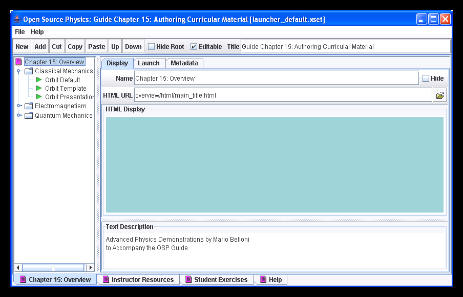

[Launcher configuration files are created and edited using the LaunchBuilder program.]
Launcher configurations, application data, and associated documentation are organized using an Extensible Markup Language (xml) text file named launcher_default.xset. Although this file is packaged inside the Java archives on the OSP CD, it can also be distributed in an external "zip" archive or as a stand-alone file. Launcher searches for external configurations in the directory from which Launcher was executed. Because external configurations can be modified without recompiling code or rebuilding jar files, teachers and authors can adapt Open Source Physics curricular material for their own needs or author their own curricular material.
Although Launcher configuration xml files can opened with any text editor, they are most easily created and edited using the LaunchBuilder program. Select the Edit menu item under the Launcher frame's File menu to explore the capabilities of LaunchBuilder.